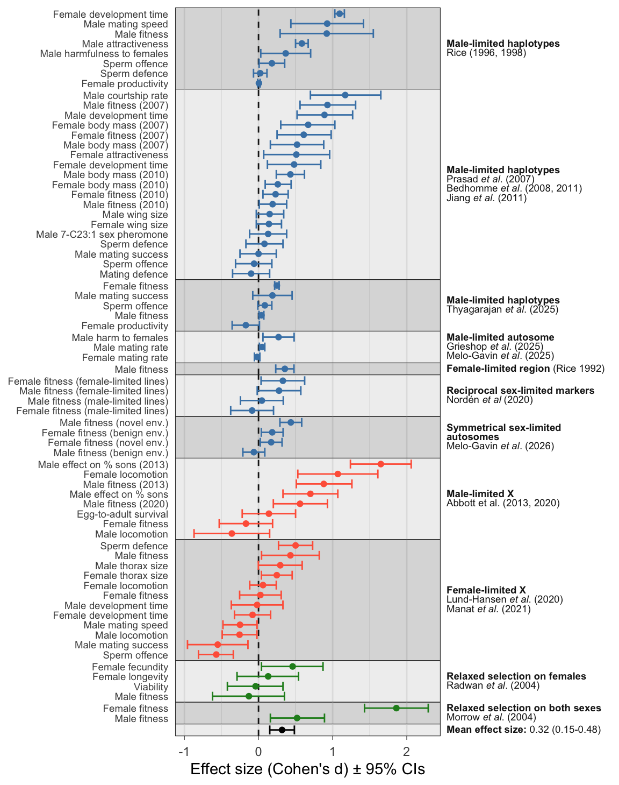
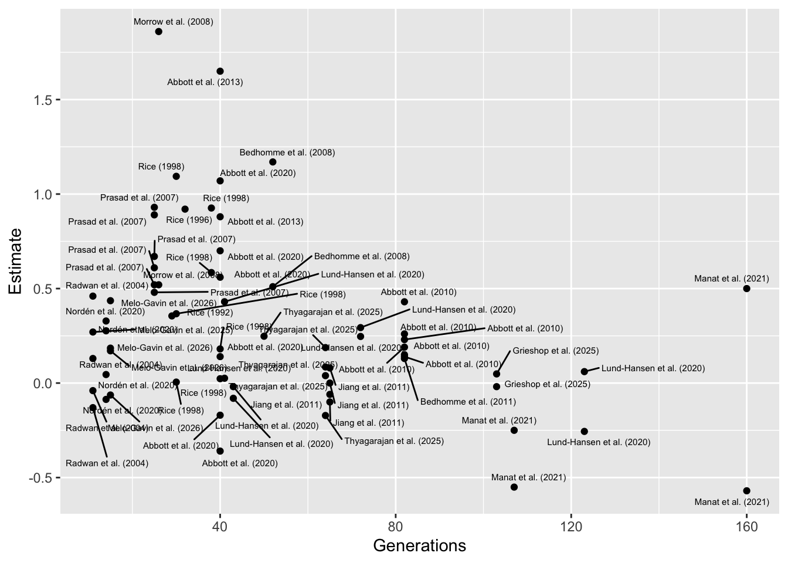

Last updated: 2026-02-09
Checks: 6 1
Knit directory: exp_evol_metaanalysis/
This reproducible R Markdown analysis was created with workflowr (version 1.7.2). The Checks tab describes the reproducibility checks that were applied when the results were created. The Past versions tab lists the development history.
The R Markdown file has unstaged changes. To know which version of
the R Markdown file created these results, you’ll want to first commit
it to the Git repo. If you’re still working on the analysis, you can
ignore this warning. When you’re finished, you can run
wflow_publish to commit the R Markdown file and build the
HTML.
Great job! The global environment was empty. Objects defined in the global environment can affect the analysis in your R Markdown file in unknown ways. For reproduciblity it’s best to always run the code in an empty environment.
The command set.seed(20260206) was run prior to running
the code in the R Markdown file. Setting a seed ensures that any results
that rely on randomness, e.g. subsampling or permutations, are
reproducible.
Great job! Recording the operating system, R version, and package versions is critical for reproducibility.
Nice! There were no cached chunks for this analysis, so you can be confident that you successfully produced the results during this run.
Great job! Using relative paths to the files within your workflowr project makes it easier to run your code on other machines.
Great! You are using Git for version control. Tracking code development and connecting the code version to the results is critical for reproducibility.
The results in this page were generated with repository version 77d88f0. See the Past versions tab to see a history of the changes made to the R Markdown and HTML files.
Note that you need to be careful to ensure that all relevant files for
the analysis have been committed to Git prior to generating the results
(you can use wflow_publish or
wflow_git_commit). workflowr only checks the R Markdown
file, but you know if there are other scripts or data files that it
depends on. Below is the status of the Git repository when the results
were generated:
Ignored files:
Ignored: .DS_Store
Ignored: .Rproj.user/
Ignored: input_data/.DS_Store
Ignored: input_data/lundhansen_github_data_FLXevoexp-master/.DS_Store
Ignored: input_data/lundhansen_github_data_FLXevoexp-master/DevelopmentTimeGeneration/.Rapp.history
Ignored: input_data/lundhansen_github_data_FLXevoexp-master/LocomotionAssayGeneration123/.DS_Store
Ignored: input_data/lundhansen_github_data_FLXevoexp-master/LocomotionAssayGeneration123/.Rapp.history
Ignored: input_data/lundhansen_github_data_FLXevoexp-master/LocomotionAssayGeneration123/.Rhistory
Ignored: input_data/lundhansen_github_data_FLXevoexp-master/ReproductiveFitnessFM/.Rapp.history
Ignored: input_data/lundhansen_github_data_FLXevoexp-master/ReproductiveFitnessFM/.Rhistory
Ignored: input_data/lundhansen_github_data_FLXevoexp-master/StandardFitnessGeneration15-18/.Rapp.history
Ignored: input_data/lundhansen_github_data_FLXevoexp-master/StandardFitnessGeneration39-41 /.Rapp.history
Ignored: input_data/lundhansen_github_data_FLXevoexp-master/ThoraxSizeGeneration15-18/.Rapp.history
Ignored: input_data/lundhansen_github_data_FLXevoexp-master/ThoraxSizeGeneration72/.Rapp.history
Unstaged changes:
Modified: analysis/meta_analysis.Rmd
Deleted: data/README.md
Deleted: output/README.md
Note that any generated files, e.g. HTML, png, CSS, etc., are not included in this status report because it is ok for generated content to have uncommitted changes.
These are the previous versions of the repository in which changes were
made to the R Markdown (analysis/meta_analysis.Rmd) and
HTML (docs/meta_analysis.html) files. If you’ve configured
a remote Git repository (see ?wflow_git_remote), click on
the hyperlinks in the table below to view the files as they were in that
past version.
| File | Version | Author | Date | Message |
|---|---|---|---|---|
| html | 77d88f0 | luekholman | 2026-02-09 | Build site. |
| Rmd | d64f5ed | luekholman | 2026-02-09 | figure caption |
| html | 0b01f66 | luekholman | 2026-02-09 | Build site. |
| html | 27f0459 | luekholman | 2026-02-09 | Build site. |
| html | b0251e4 | luekholman | 2026-02-09 | Many minor edits |
| html | f4fb206 | luekholman | 2026-02-09 | First commit |
| html | f1a4d10 | luekholman | 2026-02-09 | First commit |
| html | 6029ddf | luekholman | 2026-02-09 | Build site. |
| Rmd | 7057ba1 | luekholman | 2026-02-09 | First commit |
| html | 7057ba1 | luekholman | 2026-02-09 | First commit |
Load packages, the meta-analysis data, and a helper function.
library(tidyverse)
library(metafor)
library(DT)
library(ggh4x)
library(kableExtra)
# function to make the searchable, exportable HTML table
my_data_table <- function(df){
num_cols <- names(df)[sapply(df, is.numeric)]
num_cols <- num_cols[num_cols != "Generations"]
datatable(
df, rownames = FALSE,
autoHideNavigation = TRUE,
extensions = c("Scroller", "Buttons"),
options = list(
autoWidth = TRUE,
dom = 'Bfrtip',
deferRender = TRUE,
scrollX = TRUE,
scrollY = 1000,
scrollCollapse = TRUE,
buttons = list(
'pageLength', 'colvis', 'csv',
list(
extend = 'pdf',
pageSize = 'A4',
orientation = 'landscape',
filename = 'Trait_data'
)
),
pageLength = 100
)
) %>%
formatRound(
columns = num_cols,
digits = 3
)
}
# Load up the meta-analysis data:
meta_analysis_data <- list.files("effect_sizes/", full.names = T) %>%
lapply(read_csv, show_col_types = FALSE) %>%
bind_rows() %>%
left_join(read_csv("input_data/study_metadata.csv"), by = join_by(Study)) %>%
mutate(year = str_extract(Short_name, "[:digit:]+")) %>%
arrange(year) %>%
mutate(Sex = "Both",
Sex = replace(Sex, str_detect(Trait, "Male"), "Male"),
Sex = replace(Sex, str_detect(Trait, "Female"), "Female"))This table is searchable and can be exported as a file. You can also hide columns to help read it. There are 56 effect sizes from 11 independent experimental evolution projects, which were published across 16 journal articles.
meta_analysis_data %>%
select(-year, -Short_name) %>%
my_data_table()This meta-analysis can be used to calculate the grand mean effect
size. It’s a mixed effects meta-analysis with the random effects
structure ~ 1 | Origin_of_lines/Study. This means we fit a
random intercept for Origin_of_lines, a variable which
gives the name of the study that first created the experimental
evolution lines being measured. We also fit a random intercept for
Study nested within Origin_of_lines, where
Study is a variable giving the name of the study doing the
measuring (which is often the same study, but not always, since some
studies re-measured lines that were created in an earlier study).
meta_analysis <- rma.mv(
yi = Estimate,
V = Var,
random = ~ 1 | Origin_of_lines/Study,
data = meta_analysis_data,
method = "REML"
)
summary(meta_analysis)
Multivariate Meta-Analysis Model (k = 56; method: REML)
logLik Deviance AIC BIC AICc
-479.4613 958.9226 964.9226 970.9446 965.3931
Variance Components:
estim sqrt nlvls fixed factor
sigma^2.1 0.0192 0.1387 11 no Origin_of_lines
sigma^2.2 0.1198 0.3462 16 no Origin_of_lines/Study
Test for Heterogeneity:
Q(df = 55) = 1273.7759, p-val < .0001
Model Results:
estimate se zval pval ci.lb ci.ub
0.2588 0.1009 2.5653 0.0103 0.0611 0.4565 *
---
Signif. codes: 0 '***' 0.001 '**' 0.01 '*' 0.05 '.' 0.1 ' ' 1The above results table shows that the grand mean effect size is 0.259, with a standard error of 0.101 and 95% CIs of 0.061 to 0.457.
Here, I use AICc model selection to compare 7 competing meta-analysis
models, which fit Generations, Sex,
Experiment_type, a combination of 2 or all of these, or the
intercept-only null model. Generations gives the number of
generations of selection at the time the focal trait was measured,
Sex gives the sex of the individuals expressing the trait
(male, female, or both sexes), and Experiment_type is
either “Sex-specific inheritance” or “Sex-specific relaxation of
selection”.
The top model includes the moderator Generations, and it
is ahead of second-best model (which also includes Sex) by
much more than 2 AICc, suggesting that Generations explains
substantial variation in the data but the other moderators do not.
fit_ma <- function(formula){
scaled_meta_analysis_data <-
meta_analysis_data %>%
mutate(Generations = as.numeric(scale(Generations)))
if(formula == "Intercept only"){
return(meta_analysis)
}
rma.mv(
yi = Estimate,
V = Var,
mods = as.formula(formula),
random = ~ 1 | Origin_of_lines/Short_name,
data = scaled_meta_analysis_data,
method = "REML"
)
}
fit_all <- function(formulae){
meta <- lapply(formulae, fit_ma)
get_p <- function(ma) as.numeric(ma$p)
get_logLik <- function(ma) as.numeric(logLik(ma))
get_AICc <- function(ma) as.numeric(AIC(ma, correct = T))
data.frame(
Model = formulae,
k = sapply(meta, get_p),
logLik = sapply(meta, get_logLik),
AICc = sapply(meta, get_AICc)) %>%
arrange(AICc) %>%
mutate(Model = str_remove_all(Model, "~ "),
delta_AICc = round(AICc - AICc[1], 2),
delta_AICc = c(" ", delta_AICc[2:length(delta_AICc)]))
}
fit_all(c("~ Generations + Sex + Experiment_type1",
"~ Generations + Sex",
"~ Sex + Experiment_type1",
"~ Generations",
"~ Sex",
"~ Experiment_type1",
"Intercept only")) %>%
kable() %>%
kable_styling(full_width = FALSE)| Model | k | logLik | AICc | delta_AICc |
|---|---|---|---|---|
| Generations | 2 | -473.1500 | 955.1162 | |
| Generations + Sex | 4 | -474.7394 | 963.3454 | 8.23 |
| Intercept only | 1 | -479.4613 | 965.3931 | 10.28 |
| Generations + Sex + Experiment_type1 | 5 | -474.4188 | 965.4423 | 10.33 |
| Experiment_type1 | 2 | -478.7294 | 966.2752 | 11.16 |
| Sex | 3 | -481.8756 | 975.0279 | 19.91 |
| Sex + Experiment_type1 | 4 | -481.1773 | 976.2212 | 21.1 |
Here are the results of the top model, showing the significant
negative effect of the moderator Generations on effect size
(note: Generations was scaled to have mean 0, SD 1, prior
to analysis). This is a counter-intuitive result since we might expect
greater effects after more generations of selection, but it is not very
informative since Generations is likely confounded with
other factors (e.g. species, type of experimental design, type of trait
being measured). The grand mean effect size (predicted here for the
average value of Generations, which is 54.1) is much the
same after adjusting for the effect of Generations.
fit_ma("~ Generations")
Multivariate Meta-Analysis Model (k = 56; method: REML)
Variance Components:
estim sqrt nlvls fixed factor
sigma^2.1 0.0000 0.0001 11 no Origin_of_lines
sigma^2.2 0.1183 0.3440 16 no Origin_of_lines/Short_name
Test for Residual Heterogeneity:
QE(df = 54) = 1251.2231, p-val < .0001
Test of Moderators (coefficient 2):
QM(df = 1) = 14.0152, p-val = 0.0002
Model Results:
estimate se zval pval ci.lb ci.ub
intrcpt 0.2512 0.0900 2.7925 0.0052 0.0749 0.4275 **
Generations -0.1151 0.0307 -3.7437 0.0002 -0.1754 -0.0548 ***
---
Signif. codes: 0 '***' 0.001 '**' 0.01 '*' 0.05 '.' 0.1 ' ' 1plot_data <- meta_analysis_data %>%
select(Origin_of_lines, Short_name,
Experiment_type1, Experiment_type2, Trait, Estimate,
Lower_95_CI,
Upper_95_CI)
plot_data$Trait[plot_data$Trait == "Male fitness" & plot_data$Short_name == "Abbott et al. (2013)"] <- "Male fitness (2013)"
plot_data$Trait[plot_data$Trait == "Male fitness" & plot_data$Short_name == "Abbott et al. (2020)"] <- "Male fitness (2020)"
plot_data <- plot_data %>%
group_by(Origin_of_lines) %>%
mutate(Short_name = paste0(unique(Short_name), collapse = ";\n")) %>%
bind_rows(tibble(
Origin_of_lines = " ", Short_name = "Mean effect size",
Experiment_type1 = " ", Trait = " ",
Estimate = as.numeric(meta_analysis$b),
Lower_95_CI = as.numeric(meta_analysis$ci.lb),
Upper_95_CI = as.numeric(meta_analysis$ci.ub)
))
levs <- plot_data$Short_name %>% unique()
plot_data <- plot_data %>%
mutate(Short_name = factor(Short_name, levs))
bands <- plot_data %>%
mutate(y = 1:n()) %>%
group_by(Short_name) %>%
summarise(
ymin = min(y) -0.5,
ymax = max(y) + 0.5,
.groups = "drop") %>%
dplyr::mutate(
stripe = row_number() %% 2
)
# order the traits within studies by effect size
plot_data <- plot_data %>%
mutate(Short_name = factor(Short_name, levs)) %>%
arrange(Estimate) %>%
mutate(Trait_study = factor(paste(Trait, Short_name, sep = "~"),
unique(paste(Trait, Short_name, sep = "~"))))
plot_data %>%
ggplot(aes(y = Trait_study, x = Estimate)) +
geom_vline(xintercept = 0, linetype = 2, colour = "grey10") +
geom_errorbar(aes(xmin = Lower_95_CI,
xmax = Upper_95_CI,
colour = Experiment_type1)) +
geom_point(aes(colour = Experiment_type1)) +
scale_y_discrete(labels = function(x) sub("~.*$", "", x)) +
facet_grid2( rows = vars(Short_name),
scales = "free_y",
space = "free_y") +
theme_minimal()+
theme(legend.position = "top",
panel.grid.major.y = element_blank(),
strip.text.y = element_text(angle = 0),
panel.spacing.y=unit(0, "lines"))+
labs(x = "Effect size (Cohen's d) \u00B1 95% CIs",
y = NULL,
colour = NULL) +
# scale_color_brewer(palette = "Set1") +
geom_rect(
data = bands,
aes(ymin = ymin, ymax = ymax, xmin = -Inf, xmax = Inf, fill = factor(stripe)),
alpha = 0.1,
inherit.aes = FALSE,
fill = rep(c("purple", "orange"), 6)
)
Figure 1: Forest plot showing the estimated effect sizes (Cohen’s d \(\pm\) 95% CIs). The y-axis indicates which trait was measured, and the coloured bands group effect sizes that come from the same set of experimental evolution lines (which are covered in one or more publications, named on the right). Positive effect sizes indicate evolutionary change in the direction predicted under IaSC, while negative effects indicate evolution in the opposite direction. Point colour differentiates between studies that manipulated inheritance vs selection. The grand mean effect size, shown at the bottom, is significantly positive.
GenerationsOn the right of x-axis (high generation number), this result is driven by a couple of studies, Lund-Hansen et al. (2020) and Manat et al. (2021), which both relate to the same set of experimental evolution lines, and which both focus on female-limited evolution of X chromosomes (uniquely in the full dataset). I also calculated the effect sizes from the raw data for these studies, avoiding issues with falsely inflating them. to the left of the x-axis (short generation number), the trend is driven by a couple of older studies I calculated the effect sizes from summary statistics, possibly inflating them.
Therefore, I don’t feel there is good evidence for a true negative
effect of Generations, and this result instead reflects
confounding.
library(ggrepel)
meta_analysis_data %>%
ggplot(aes(Generations, Estimate)) +
geom_point() +
geom_text_repel(aes(label = Short_name), size = 2, max.overlaps = 1000)
sessionInfo()R version 4.5.2 (2025-10-31)
Platform: aarch64-apple-darwin20
Running under: macOS Tahoe 26.2
Matrix products: default
BLAS: /System/Library/Frameworks/Accelerate.framework/Versions/A/Frameworks/vecLib.framework/Versions/A/libBLAS.dylib
LAPACK: /Library/Frameworks/R.framework/Versions/4.5-arm64/Resources/lib/libRlapack.dylib; LAPACK version 3.12.1
locale:
[1] en_US.UTF-8/en_US.UTF-8/en_US.UTF-8/C/en_US.UTF-8/en_US.UTF-8
time zone: Europe/London
tzcode source: internal
attached base packages:
[1] stats graphics grDevices utils datasets methods base
other attached packages:
[1] ggrepel_0.9.6 kableExtra_1.4.0 ggh4x_0.3.1
[4] DT_0.34.0 metafor_4.8-0 numDeriv_2016.8-1.1
[7] metadat_1.4-0 Matrix_1.7-4 lubridate_1.9.4
[10] forcats_1.0.1 stringr_1.6.0 dplyr_1.2.0
[13] purrr_1.2.1 readr_2.1.6 tidyr_1.3.2
[16] tibble_3.3.1 ggplot2_4.0.2 tidyverse_2.0.0
loaded via a namespace (and not attached):
[1] gtable_0.3.6 xfun_0.56 bslib_0.10.0 htmlwidgets_1.6.4
[5] lattice_0.22-7 mathjaxr_2.0-0 tzdb_0.5.0 crosstalk_1.2.2
[9] vctrs_0.7.1 tools_4.5.2 generics_0.1.4 parallel_4.5.2
[13] pkgconfig_2.0.3 RColorBrewer_1.1-3 S7_0.2.1 lifecycle_1.0.5
[17] compiler_4.5.2 farver_2.1.2 git2r_0.36.2 textshaping_1.0.4
[21] httpuv_1.6.16 htmltools_0.5.9 sass_0.4.10 yaml_2.3.12
[25] crayon_1.5.3 later_1.4.5 pillar_1.11.1 jquerylib_0.1.4
[29] whisker_0.4.1 cachem_1.1.0 nlme_3.1-168 tidyselect_1.2.1
[33] digest_0.6.39 stringi_1.8.7 labeling_0.4.3 rprojroot_2.1.1
[37] fastmap_1.2.0 grid_4.5.2 cli_3.6.5 magrittr_2.0.4
[41] withr_3.0.2 scales_1.4.0 promises_1.5.0 bit64_4.6.0-1
[45] timechange_0.4.0 rmarkdown_2.30 bit_4.6.0 otel_0.2.0
[49] workflowr_1.7.2 hms_1.1.4 evaluate_1.0.5 knitr_1.51
[53] viridisLite_0.4.2 rlang_1.1.7 Rcpp_1.1.1 glue_1.8.0
[57] xml2_1.5.2 vroom_1.7.0 svglite_2.2.2 rstudioapi_0.18.0
[61] jsonlite_2.0.0 R6_2.6.1 systemfonts_1.3.1 fs_1.6.6